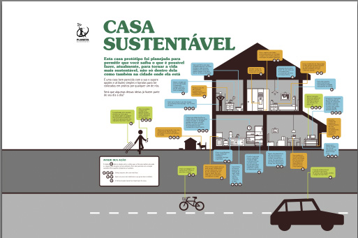

Habitção Sustentavel
O que faz de uma habitação sustentavel?
Uma habitação pode ser considerada sustentável quando a adequação ambiental, a viabilidade econômica e a justiça social são incorporadas em todas as etapas do seu ciclo de vida, ou seja, desde a fase de concepção, construção, uso e manutenção, até, possivelmente, em um processo de demolição.
Uma habitação sustentável traz uma série de benefícios, como a minimização do uso de recursos naturais da geração de poluição, o desenvolvimento da economia local e a formalidade nas relações de trabalho, além do aumento da eficiência no uso de recursos financeiros na construção e valorização do imóvel pelo mercado.
